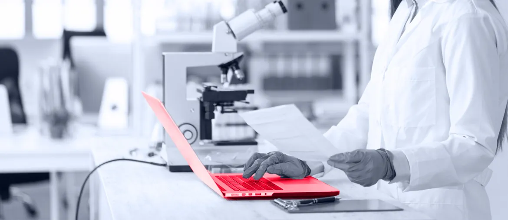
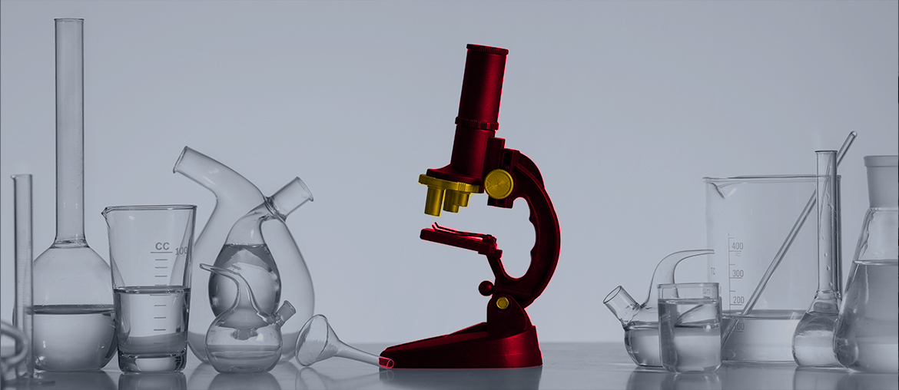

The NAT Studio page leans on large animated product assets; Lighthouse could not compute LCP and flagged heavy page weight. Replace GIF-heavy proof with short captured flows plus static fallbacks before more paid traffic.
Prepared for Newpage Solutions
Scaling digital health delivery without slowing Newpage teams
Newpage is moving hard on AI, data, and regulated digital health. NAT Studio shows the market story: faster QA, stronger coverage, and audit-ready releases for clients.
Saw the Full Stack Engineer signal, plus public roles for Angular, Python/AWS, DevSecOps, and mobile leads. That looks like delivery load is rising across product, platform, and client work.
Our read
The Full Stack Engineer signal says Newpage is adding hands for real delivery, not a side experiment. NAT Studio adds another layer: it promises Jira-to-test generation, self-healing tests, and compliance-grade reporting for GxP, 21 CFR Part 11, and Annex 11. That is a hard product promise when buyers are skeptical of opaque AI testing tools. The bottleneck is likely not ideas; it is stable full-stack delivery, QA proof, and release discipline across a remote team. If that load stays inside the same teams, client work and NAT Studio proof can start to compete.
Where we'd start
The careers page shows Angular, Python/AWS, mobile, Java, PHP, and DevSecOps needs. Map them to one shared delivery board so platform work does not fragment by client.
What we'd do
Engagement model
A dedicated squad under Newpage's PO or PM, with weekly demos and clear release evidence.
Team shape
- Tech Lead
- 2 Full-stack Engineers
- QA Automation
- DevOps Cloud
- Product Design
Relevant stack
- React
- Angular
- Node.js
- Python
- AWS/Azure
- DevOps
Map the load
Review NAT Studio flows, role backlog, and release risks; split product, client, and infrastructure work into one delivery map.
Stabilize one path
Stabilize the full-stack path around React or Angular, Node.js or Python APIs, and cloud deployment checks.
Prove QA flows
Add QA automation around Jira-to-test generation, self-healing behavior, forms, reports, and demo-critical user journeys.
Ship evidence
Ship a pilot release pack with test evidence, handover notes, and a plan for the next squad.
Who is Elinext
Elinext is a full-cycle software development company, active since 1997, with about 700 in-house specialists and no freelancers. For Newpage, the relevant part is delivery depth: full-stack engineers, QA automation, DevOps, AI/ML, cloud, and product design under one roof. We hold ISO 9001 and ISO 27001, which matters for regulated health and life-sciences work. Our named clients include Siemens, Broadcom, Volkswagen, TRUMPF, and TUI. That lets us place a focused squad under Sahaj's product or program lead, without adding more hiring drag.
- Siemens
- Broadcom
- Volkswagen
- TRUMPF
- TUI
Proof

Clinical trials document system
A dedicated team built FDA-compliant SaaS for clinical document work, used by healthcare and pharma professionals.
Read the case study
Pharmaceutical DevOps optimization
Elinext joined an Agile in-house team, improved CI/CD flow, and reduced AWS cost without slowing delivery.
Read the case study